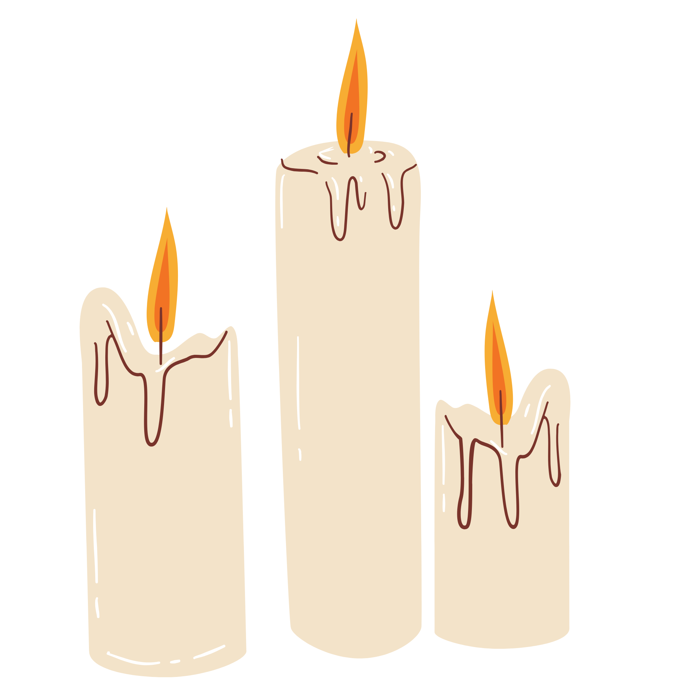
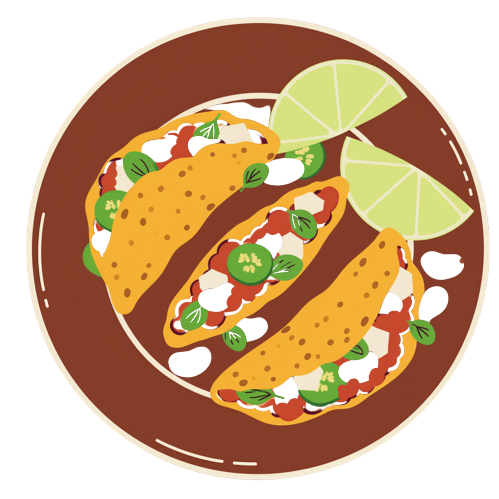
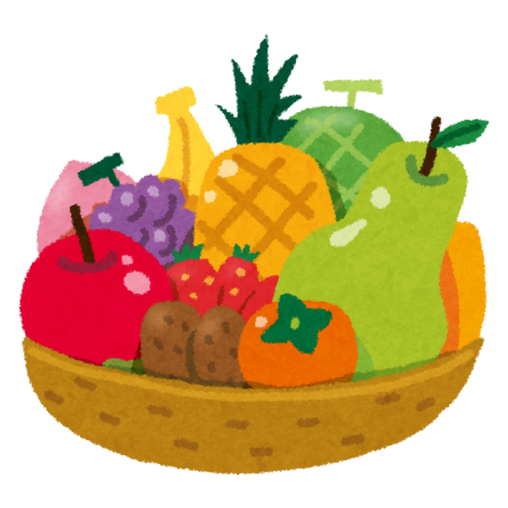
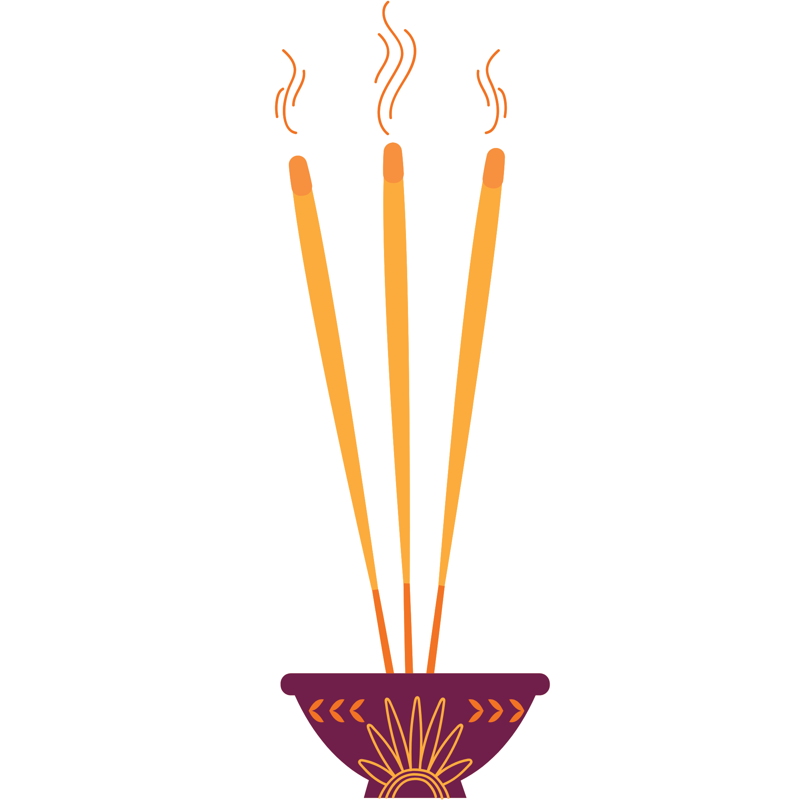
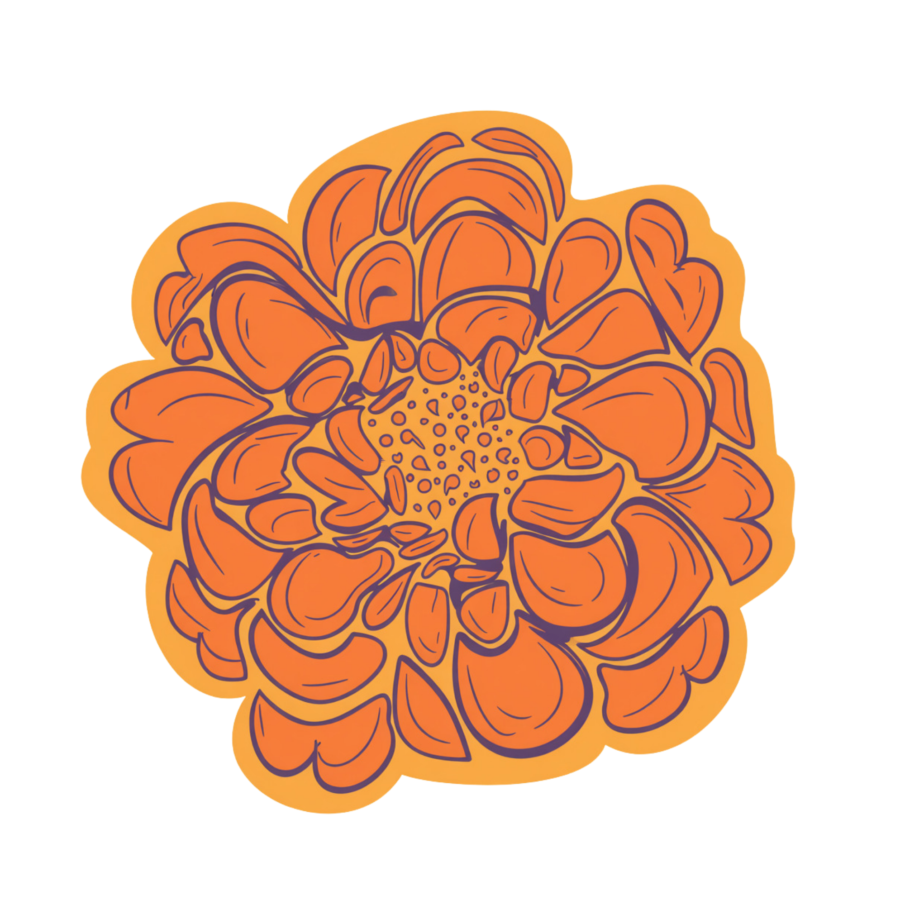

PAPEL PICADO.

Representa al aire que trae a las alamas.
Representa al aire que trae a las alamas.

Purifica a las almas en su viaje de regreso.

Representa a la muerte como parte de la vida.

Guía para que el alma llegue a su antiguo hogar

Se prepara el platillo favorito de los difuntos.

Se colocan las de temporada para representar la naturaleza.

Limpiar el lugar de los “malos espíritus”.

Conmemora el cielo de la vida y la muerte.

Conmemora el cielo de la vida y la muerte.

guia el camino de las almas con su aroma y color.
indican a quien se dedica la ofrenda y honrar su memoria.
| Colores | Significados |
|---|---|
| Naranja | Luto para los azteca |
| Blanco | Para los niños |
| Azul | Los que murieron a causa del agua |
| Morado | Luto en la religión cató;ica |
| Rojo | Guerreros y mujeres que murieron en parto |
| Verde | Para los jovenes |
| Negro | Simboliza el inframundo |
| Amarillo | Para los ancianos |